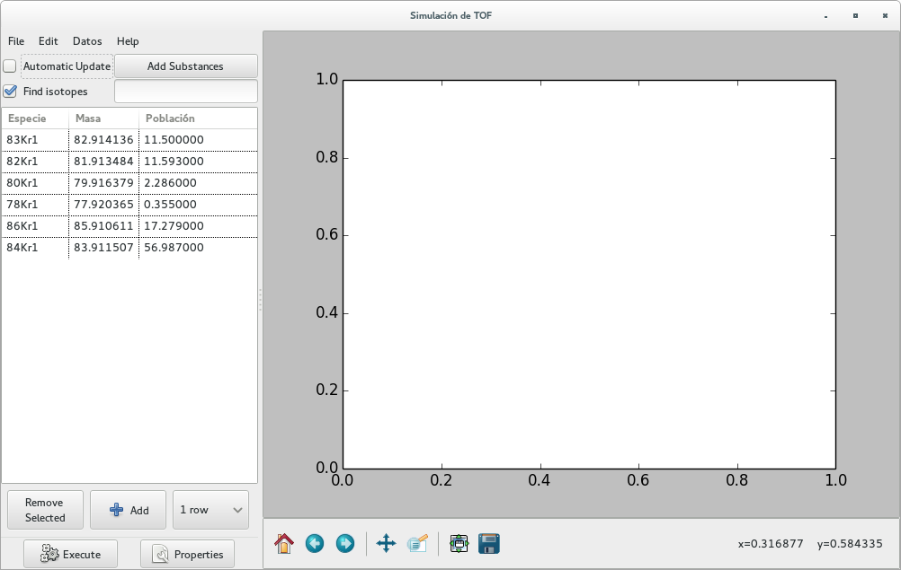
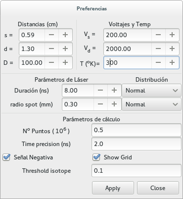

Graphical interface
Start the program from a command line with either:
$> tof_gtk
or:
$> tof_gtk.py
The graphical interface is intended to be intuitively obvious. At startup you will find a window similar to the following:
{kind=link}
Where, in this case, all isotopes of Kripton are defined. The button “Execute” produces the time-of-flight signal for the included masses.
Mass selection
Each mass may be selected with the mouse
Once selected, they may be removed by using the button Remove Selected in the bottom left corner
The simplest form to add new substances is:
Add substances or elements in the box below the Add Substances button
The notation for (one or more) substances is:
Kr, Al, Au (for elements)
N2, O2, H2O, CO2, C7H8 (molecules, in this case \(N_2, O_2, CO_2, C_7H_8\))
Then, press the Add Substances button (or the shortcut key Alt s)
The box Find isotopes (enabled by default) allows to include all isotopes for all atoms, and all combinations of isotopes for molecule. Only isotopic composition with non-negligible abundance will be included (value configurable by Isotope threshold)
In this way, all isotopes of a given substance will be included with the correct relative abundances.
Convention for label is: a list of isotopes, separated by a dash. Each isotope has the form: Mass number + Symbol + Number of atoms. For instance,
For common water isotope (\(H_2O\)) we will have: 1H2-16O1.
For heavy water, with oxygen-18 (\(^{18}O\)) we will have: 1H2-18O1
Also, substances may be added manually in the table, by:
Add rows (clicking the Add button)
Fill in the three boxes in the row
Especie: Label of identification
Masa: The mass of the substance in AMU. It will determine the position and width of the peak
Población: Abundance of the substance. Determines the heigth of the simulated peak.
Parameters configuration
The box Automatic Update allows to see modifications on real time when parameters are changed.
The button Properties (Alt p) opens a window with options for construction and operation parameters
Configuration window
The properties window is shown in the following figure
{kind=link}
Here, all construction and operation parameters of the TOF may be configured:
TOF dimensions
Extraction distance
Lenght of the acceleration zone \(d\)
Free flight distance \(D\)
Applied voltages
Extraction voltage \(V_s\)
Acceleration voltage \(V_d\)
Working temperature \(T\)
Laser
Pulse duration and temporal dependence (normal or uniform)
Ionization spot radius and spatial profile (normal or uniform)
Plotting
Negative signal (as shown in osciloscopes)
Add a grid
Isotope threshold
The box Threshold isotope allows to set the minimal abundance (percentage) such that the substance is included